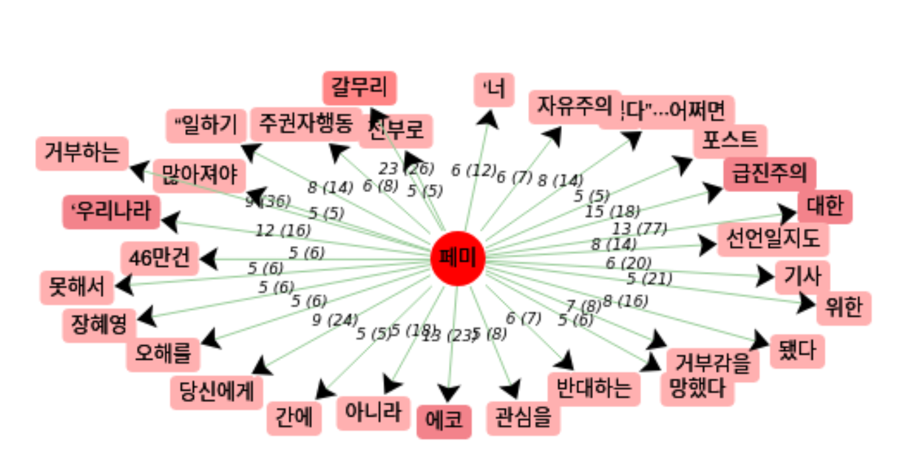
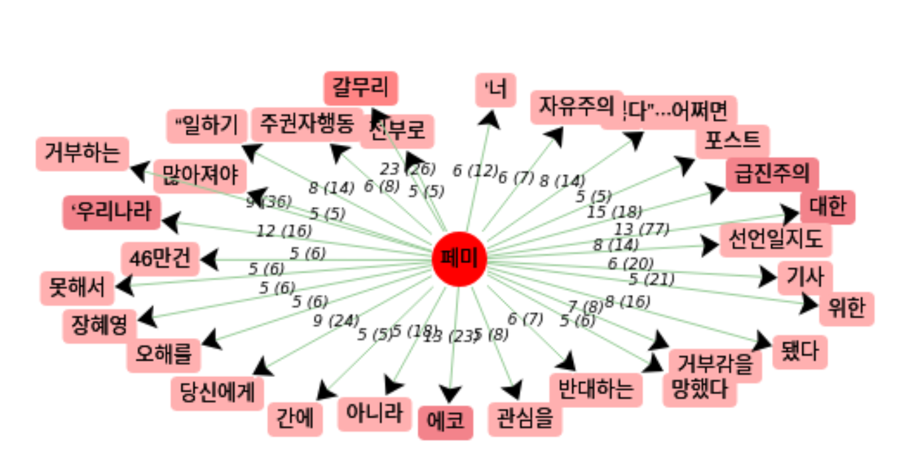

Pour réaliser nos analyses sous iTrameur, nous avons utilisé le fichier contenant uniquement les contextes dans lesquels notre mot était employé. Puisque nous avons travaillé jusqu'ici avec le mot "페미" (fémi) au lieu de "페미니즘" (féminisme), nous avons remplacé toutes les occurrences et toutes les formes de féminisme ou féministe.s par "fémi". Cela permettait ainsi de les concaténer en une forme unique. En effet, le coréen étant une langue agglutinante, la présence de particules en fin de mot aurait pu rendre l'analyse plus compliquée car toutes les formes d'un même mot aurait alors été présentes dans le corpus.

Sans surprise, notre mot est le plus présent dans notre base, composée des contextes dans lequel apparait 페미 (fémi). Nous retrouvons également le terme 여성, qui désigne les personnes de sexe féminin. 이, 그 sont des articles définis. 을 수 et 있다 s'associent dans l'expression -을 수 있다 qui indique la possibilité de quelque chose. Pour finir, 대한 signifie "à propos (de)".
 

Nous constatons ici que parmi les mots les plus cooccurrents avec 페미 (fémi), nous avons notamment les termes "radicalisme", ainsi que le verbe "rejeter" et le sentiment de rejet. Ceci semble dénoter la vision générale qu'a la Corée du Sud du féminisme : un "point de vue" assez violent. On retrouve d'ailleurs parmi les cooccurrents les plus fréquents "être opposé". Nous avons également la notion d'écoféminisme qui semble être assez présente. Il semblerait que le féminisme, en Corée du Sud comme en France, soit assez régulièrement associé également avec un mouvement écologiste.

Pour réaliser ce nuage de mots, nous avons uniquement pris les contextes et non les dumps, pour éviter le contenu superflu (menu, liens vers d'autres articles, etc). De même, les mots les plus fréquents apparaissant étaient plus pertinents que lorsqu'on utilisait les dumps. Nous constatons qu'ils sont un peu différents des cooccurrents que nous avons repérés avec iTrameur.
Regardons les mots apparaissant le plus :
Si nous regardons un peu la ventilation, c'est-à-dire le nombre d'occurrences de notre mot dans chaque texte, nous constatons que c'est assez inégal. En effet, peu d'articles ne parle que du féminisme en tant que tel. Comme vu précédemment, un certain nombre d'articles aborde notamment les élections présidentielles de mars 2022 et les polémiques autour du président actuel.
En France, le féminisme est avant tout perçu comme un mouvement contestataire pour une considération égale des femmes et des hommes par la société. Or, nous constatons que le mot "mouvement" est entièrement absent de notre corpus coréen. Nous avions déjà observé l'absence de ce terme dans la définition du féminisme donnée par plusieurs dictionnaires coréens en ligne. Il semblerait que le féminisme ne soit vu que comme un point de vue, adopté par une minorité de personnes, pouvant avoir des revendications assez violentes pour défendre ce dit point de vue (comme en atteste la présence du terme "radicalisme" ou encore l'emploi du verbe "éliminer" dans la définition).

Ce nuage de mot est généré grâce à partir des contextes...
L'analyse ci-dessous est réalisée à partir de l'outil d'analyse textométrique iTrameur. Le fichier entré dans iTrameur est un fichier texte contenant les contextes du mot "feminismo" de toutes les pages d' articles de presses et de blog portugais et brésiliens traitant dans leurs contenus du féminisme.
Dans un premier temps, on peut simplement revenir sur le terme "feminismo" en portugais. Il s'agit d'un emprunt fait au français. Ce qui est déjà pertinent d'analyser c'est cette traduction par l'emprunt qui consiste à utiliser un mot qui vient d'une langue étrangère. En acceptant l'idée de relativité linguistique, on accepte que la langue que nous parlons influence notre façon de penser. Ainsi, l'existence d'un mot dans notre langue est le témoignage d'une façon de penser, d'une idée. Ainsi, l'utilisation d'un mot d'une autre langue peut montrer une absence de mot correspondant à cette idée, soit une sensibilité différente à l'idée elle-même. Le Portugal développe un féminisme tardif, notamment à cause du régime totalitaire de Salazar, véritable frein à l'expension de la pensée féministe en plein essor dans le reste de l'Europe et en particulier en France.
En outre, la définition portugaise ne diffère que très peu de la définition française. Les principaux éléments de la définitions française sont également présents. Ce qui n'est pas le cas dans toutes les langues soumises à notre étude. On retrouve notamment l'idée d'un "mouvement", une lutte qui est active, ainsi que la poursuite de l'égalité entre les hommes et les femmes. Dans le nuage de mots fait à partir des dumps, on retrouve ces grandes idées : "igualdade" qui signifie égalité, "gênero" qui signifie genre, "direito" qui signifie droit.A COMPLÉTER. Ainsi, on peut voir que dans le corpus, se référer au féminisme, c'est se référer à l'égalité entre les sexes.
En observant les coocurences, deux mots attirent notre attention, negro et marxista. Ces deux mots correspondent aux expressions "feminismo negro" et "feminismo marxista", deux courants de pensées féministes. Leur point commun et qu'ils constituent une association des luttes. Quels sont plus particulièrement ces deux mouvements ?
On peut remarquer avec l'aide de différents outils que dans le corpus, "feminismo" est souvent associé à "noir" (traduction de negro) Dans le corpus, c'est le mot (sans compter les stop-words) avec l'occurence la plus forte. En effet, la question du féminisme est associé à la question d'identité et notamment à l'identité de la femme noire. Le mouvement "feminismo negro" est alors très présent au portugal, il allie lutte anti-raciste et lutte-féministe. Cette pensée féministe est fondée sur la nécessité de lier la question de race et de genre dans la lutte en faveur des noirs. Mouvement apparu au état-unis, la mention de cette lutte dans notre corpus est notifiable et en montre l'importance pour les locuteurs portugais. Cette idée est majoritairement présente en occident. Et notamment dans les pays où la population afro-descendante est présente.
En outre, "feminismo" est souvent associé à "marxista" et "marxismo". Cette association de terme montre qu'il y a une convergence des luttes. La lutte féministe n'est plus seulement la lutte pour l'égalité entre les hommes et les femmes mais qu'elle nécessite aussi une lutte des classes. L'utilisation de ces termes le côté politique marqué du féminisme.
Le féminisme est par ailleur un "sujet politique". Le terme "sujeito" est souvent présent avec